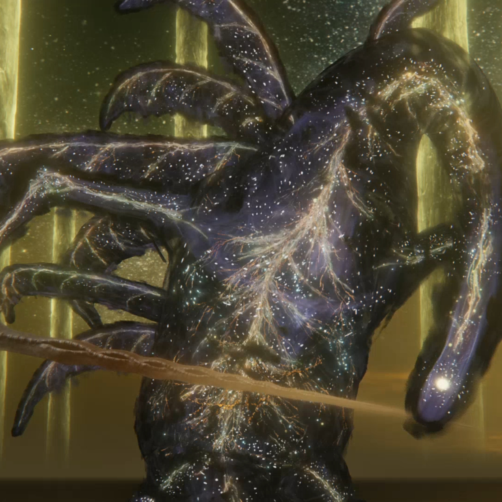

Hola
Astel Innato del Vacio
Astel, Naturalborn of the Void es un jefe legendario en Elden Ring. Esta extraña forma de vida alienígena se compone de restos de estrellas de muchos colores que aterrizaron en las Tierras Intermedias hace mucho tiempo y se encuentra en el Gran Claustro.
Ver Wiki

Elden Beast
Elden Beast es la verdadera forma del Elden Ring, actuando como vasallo de Greater Will, y se encuentra en Elden Throne. Fue enviado a las Tierras Intermedias a través de una estrella dorada mucho antes de los eventos del juego.
Ver Wiki
Godfrey, The First Elden Lord
Godfrey fue la primera consorte de la reina Marika y, por lo tanto, el primer Elden Lord de las Tierras Intermedias. Sin embargo, antes de obtener este título, era conocido como Hoarah Loux, el jefe de las tierras baldías y un guerrero sediento de sangre.
Ver Wiki
Malenia, Blade of Miquella
Malenia nació como gemela de Miquella, la más poderosa de los empíreos. Es famosa por su batalla legendaria contra Starscourge Radahn durante el Destrozamiento, durante la cual desató el poder de Scarlet Rot, reduciendo a Caelid a ruinas.
Ver Wiki
Maliketh, the Black Blade
Maliketh es la segunda y última forma del Clérigo Bestia que se encuentra en Crumbling Farum Azula. La escena de transición muestra que la capa del clérigo se quema para revelar su armadura, Maliketh es la bestia sombría de la reina Marika.
Ver Wiki